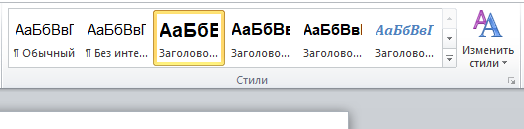

Как сделать оглавление в ворде
Оглавление нужно при работе с объемными текстами: курсовыми и дипломными работами, статьями и документами. Здесь перед оглавлением нужно сделать титульный лист в Word. Прописывать содержание вручную долго и не практично. Рассказываем, как сделать оглавление в Microsoft Word за 3 клика. Для примера используем Word 2010. Но наглядное руководство подойдет для всех версий Word. Название, расположение и внешний вид иконок может отличаться, но алгоритм сохраняется.
| Как сделать титульный лист ↓ | Как настроить оглавления ↓ | |
Форматирование заголовков
Оглавление в Word собирается автоматически из заголовков. Перед вставкой содержания заголовки важно отформатировать. Выделение жирным шрифтом здесь не подходит. Перейдите на «Главную» и найдите на панели инструментов «Стили». Для отображения заголовков и подзаголовков в оглавлении выделите текст и отметьте как «Заголовок N». Цифра показывает уровень заголовка.
Если заголовки еще не написаны, то сначала кликните на стиль, затем введите текст.

{kind=link}
Правой клавишей мыши откройте контекстное меню. При необходимости измените шрифт, цвет и размер каждого стиля.
Как сделать содержание
Когда заголовки отформатированы, приступайте к созданию оглавления.
1. Установить курсор на место будущего оглавления. Рекомендуют выделять для содержания отдельную страницу. Для этого во вкладке «Вставка» выберите «Разрыв страницы». Установите до и после содержания.
2. Перейдите во вкладку «Ссылки» и кликните «Оглавление». В контекстном меню выберите «Автособираемое оглавление 1 или 2». При необходимости используйте «Ручное оглавление».
{kind=link}
3. Word автоматически соберет содержание из форматированных заголовков. Каждый уровень содержания снабжается заполнителем из точек и номером страницы.
Оглавление создается на начальных этапах работы с документом и служит навигатором по тексту. Зажав клавишу «CTRL» и кликнув на заголовок, курсор перемещается на страницу документа под этим заголовком.
При написании и редактуре документа, текст и расположение заголовков изменяется. Обновите оглавление, чтобы сохранить актуальность.
Вернитесь к странице оглавления и кликните левой клавишей мыши. Выберите кнопку «Обновить таблицу». В открывшемся окне кликните «Обновить целиком». Программа автоматически изменит содержание на актуальное.
{kind=link}
{kind=link}
Настраиваемое оглавление
Автособираемое оглавление в Word использует настройки по умолчанию: заполнитель, количество уровней и расположение номеров страниц. При необходимости измените параметры вручную. Настройки изменяют вид оглавления на более подходящий под стиль текста.
Для этого кликните на кнопку «Оглавление» во вкладке «Ссылки». В нижних строчках контекстного меню выберите «Оглавление…».
{kind=link}
Открывается окно ручной настройки. Здесь изменяется:
• Точечный заполнитель на пунктирный или сплошной;
• Количество уровней заголовков;
• Формат вида оглавления: от классического до затейливого;
• Расположение нумерации строк по правому краю.
{kind=link}
Здесь показан образец оглавления до сохранения. После изменений кликнуть «ОК» и продолжить работу с текстом.
Спасибо за дельную информацию! Очень помогло!
Узнал несколько дельных примочек.
Согласна! Спасибо вам!)
Спасибо,все просто и понятно